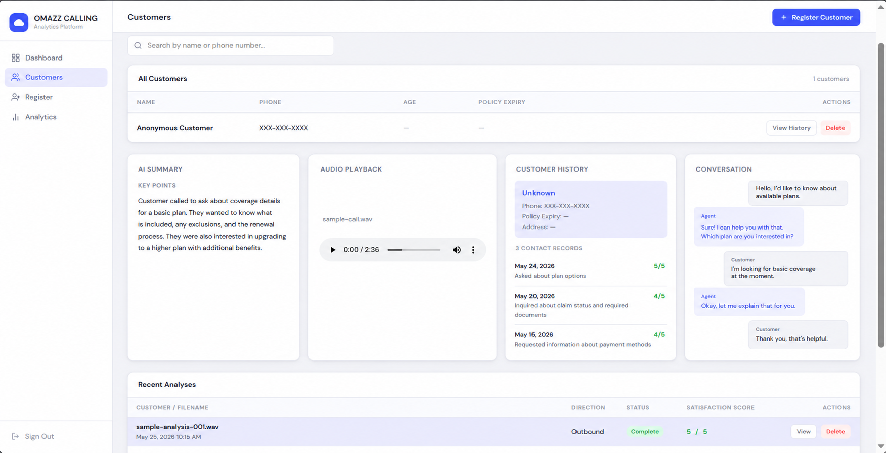
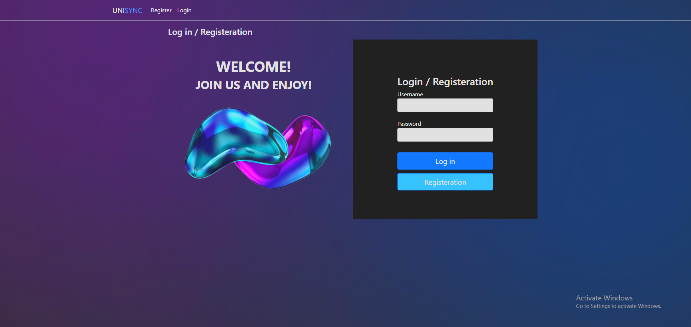
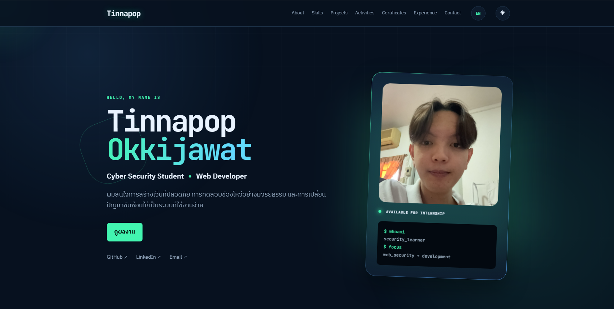
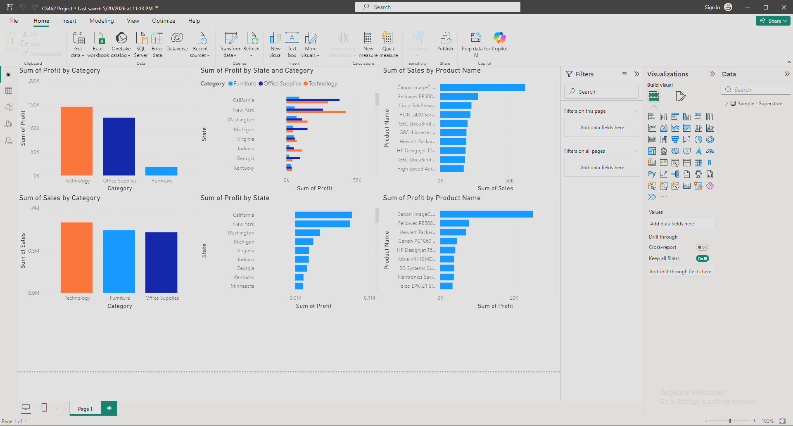
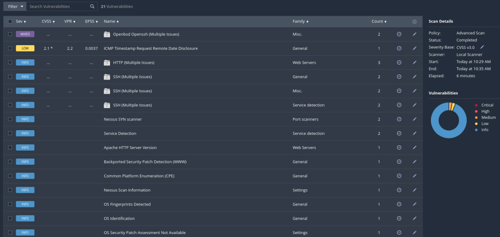
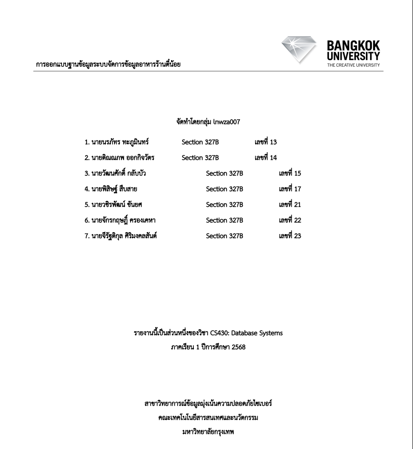
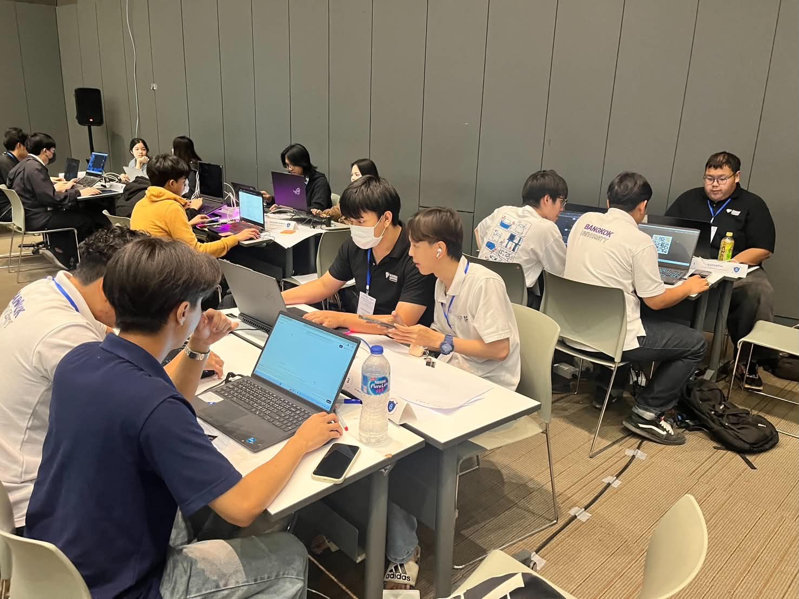
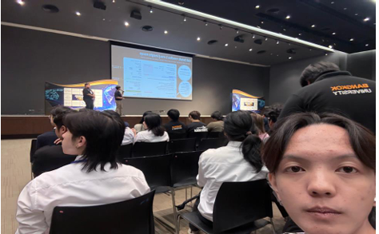

B.Sc. in Data Science/Cybersecurity
BANGKOK UNIVERSITY · 2023–Present
HELLO, MY NAME IS
Cyber Security Student • Web Developer
ผมสนใจการสร้างเว็บที่ปลอดภัย การทดสอบช่องโหว่อย่างมีจริยธรรม และการเปลี่ยนปัญหาซับซ้อนให้เป็นระบบที่ใช้งานง่าย
01 / ABOUT
สวัสดีครับ ผม Tinnapop Okkijawat นักศึกษาสาขา Data Science/Cybersecurity จาก BANGKOK UNIVERSITY สนใจ Cyber Security, Web Development และชอบเรียนรู้เทคโนโลยีใหม่ ๆ
เวลาว่างผมชอบลองทำโปรเจกต์ เข้าร่วมการแข่งขัน และฝึกผ่านแล็บต่าง ๆ เพื่อพัฒนาทักษะด้าน Application Security และ Web Development ให้ดีขึ้น
BANGKOK UNIVERSITY · 2023–Present
OWASP · Pentesting · Backend
ภาษาแม่ · ฟังพอเข้าใจและสื่อสารเบื้องต้นได้
Problem solving · Teamwork
02 / CAPABILITIES
03 / SELECTED WORK

01FULL-STACK / AIFULL-STACK DEVELOPMENT · กำลังพัฒนา
ระบบวิเคราะห์บทสนทนา Call Center เพื่อสรุปประเด็นสำคัญและช่วยติดตามคุณภาพการให้บริการ

02UNI SYNC / EMAILFRONTEND DEVELOPMENT
ระบบเว็บสำหรับจัดการอีเมล โดยรับผิดชอบการพัฒนาส่วน Frontend และหน้าจอการใช้งานหลักของระบบ
GitHub ↗
03SECURE / WEBWEB DEVELOPMENT
เว็บไซต์พอร์ตโฟลิโอ responsive เน้น accessibility, performance และแนวทาง secure coding

04DATA / REPORTDATA VISUALIZATION · TEAM PROJECT
โครงงานกลุ่มนำเสนอข้อมูลยอดขายและกำไรจากชุดข้อมูล Superstore ด้วย Power BI
Watch Video ↗
05SECURITY / ASSESSMENTVULNERABILITY ASSESSMENT
ทดสอบและจัดทำรายงานช่องโหว่ พร้อมหลักฐานและข้อเสนอแนะในการแก้ไขตามแนวปฏิบัติของ OWASP

06DATABASE / REPORTDATABASE SYSTEMS · TEAM PROJECT
โครงงานกลุ่มออกแบบฐานข้อมูลสำหรับระบบจัดการข้อมูลอาหารร้านตี๋น้อยในรายวิชา Database Systems
View Document ↗04 / COMMUNITY

COMPETITION · 10 FEB 2026
เข้าร่วมการแข่งขัน Capture The Flag ซึ่งจัดโดยคณะเทคโนโลยีสารสนเทศและนวัตกรรม มหาวิทยาลัยกรุงเทพ เพื่อฝึกการวิเคราะห์และแก้โจทย์ด้านความมั่นคงปลอดภัยไซเบอร์ภายใต้เวลาที่กำหนด

TECH EVENT · 2026
เข้าร่วมกิจกรรมด้านเทคโนโลยีเพื่อรับฟังการบรรยาย แลกเปลี่ยนมุมมอง และเรียนรู้แนวโน้มด้านไอทีจากวิทยากรและผู้เข้าร่วมงาน
05 / CREDENTIALS
OPEN TO OPPORTUNITIES
ตอนนี้ผมกำลังมองหาโอกาสฝึกงานและตำแหน่งระดับเริ่มต้นในสาย Full-Stack Development, Data และ Cyber Security พร้อมพูดคุยเกี่ยวกับโอกาสที่ผมสามารถมีส่วนร่วมกับทีมของคุณได้
tinnapop.okki@bu.ac.th